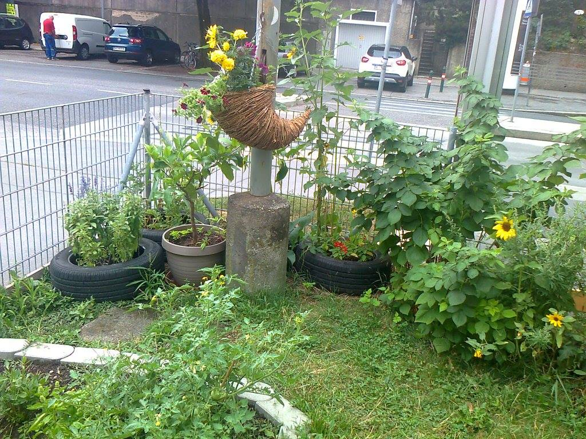
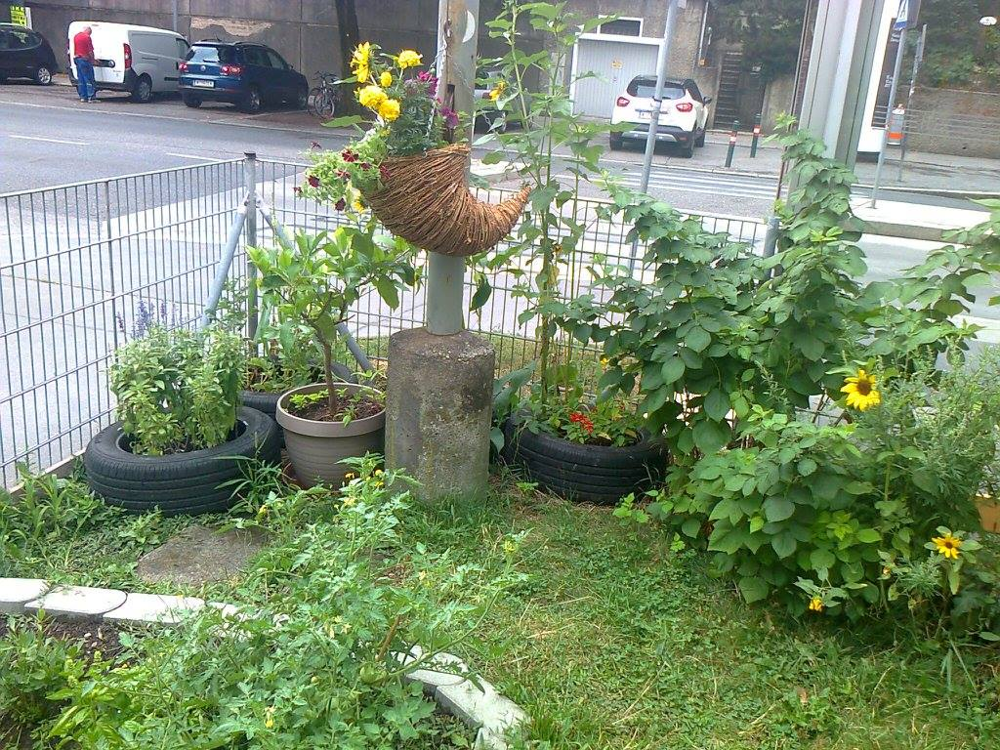

Über uns
Wir sind ein Verein mit Sitz im 19 Wiener Gemeindebezirk. Alles begann mit einem kleinen Gemeinschaftsgarten in der Krottenbachstrasse. Jetzt stehen wir vor einem größeren Projekt, dem Garten im Hugo Wolf.
Wir sind ein Verein mit Sitz im 19 Wiener Gemeindebezirk. Alles begann mit einem kleinen Gemeinschaftsgarten in der Krottenbachstrasse. Jetzt stehen wir vor einem größeren Projekt, dem Garten im Hugo Wolf.
 


Dann kontaktieren sie uns unter gaerten.fuer.alle@gmail.com